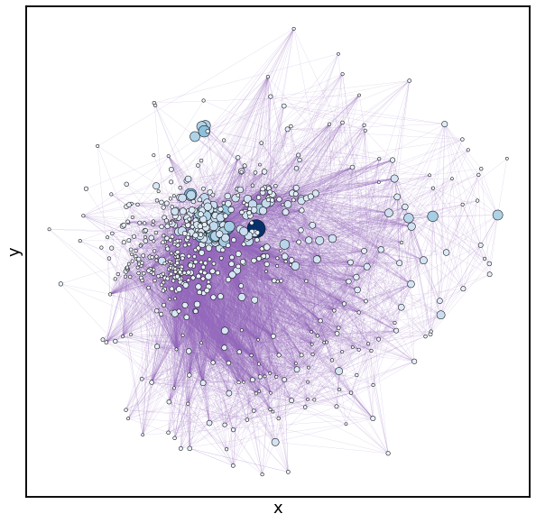
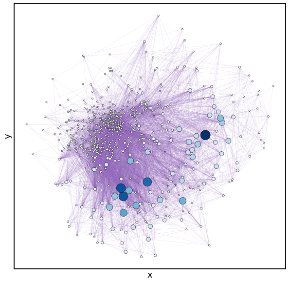
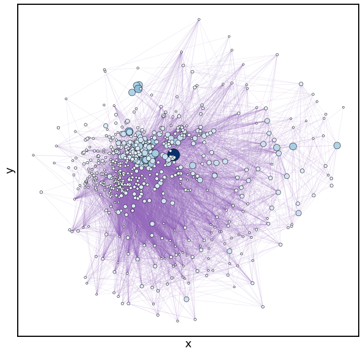
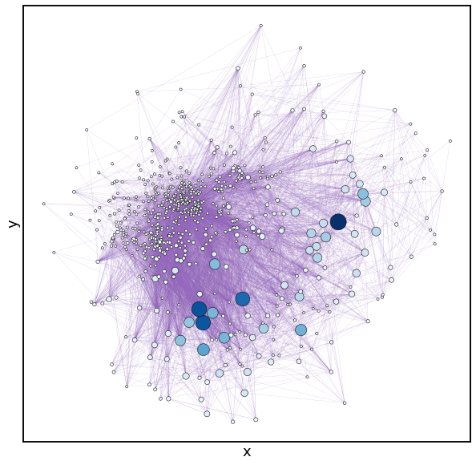

Messel Shale Food Web
Contents
Messel Shale Food Web¶
Author: Katherine Song
Goal: find the keystone species and apex predators of the food web from the 48 million years old uppermost early Eocene Messel Shale
This data set is a food web of species found in the Messel lacustrine deposit, near Darmstadt, in central Germany, and was compiled in 2014. Each edge goes from the consumer to the consumed. (Citation at the end.) The interactions have been compiled over a large number of papers, and although the edges are weighted by certainty of the connection, I have disregarded that to make the computations easier.
Section 1: Visualizing the network¶
import numpy as np
import networkx as nx
import seaborn as sns
import matplotlib.pyplot as plt
g = nx.read_edgelist("foodweb/edgess.csv", delimiter=",", create_using=nx.DiGraph)
print("Info:", g)
nodelist = list(g.nodes)
print(nodelist[0:10])
A = nx.to_numpy_array(g, nodelist=nodelist)
Info: DiGraph with 700 nodes and 6444 edges
['6', '125', '136', '138', '139', '215', '15', '0', '17', '124']
from graspologic.utils import is_fully_connected
is_fully_connected(A)
True
pos = nx.kamada_kawai_layout(g, scale=1.5)
fig, ax = plt.subplots(1, 1, figsize=(10, 10))
nx.draw_networkx(g, pos=pos, ax=ax, with_labels=False, node_size=5, width=0.2, linewidths=0.2, arrows=None)
sns.heatmap(A)
<AxesSubplot:>
from graspologic.utils import symmetrize
A_s = symmetrize(A)
g_s = nx.from_numpy_matrix(A_s, parallel_edges=False, create_using=nx.Graph)
nodelist_s = list(g_s.nodes)
from graspologic.partition import leiden, modularity
from graspologic.plot import heatmap
partition_map = leiden(g_s, trials=100)
labels = np.vectorize(partition_map.get)(nodelist_s)
heatmap(A_s, inner_hier_labels=labels, sort_nodes=True, cbar=False)
<AxesSubplot:>
modularity(g_s, partition_map)
0.35702805041606034
Looks like this network isn’t very modular
from graspologic.embed import AdjacencySpectralEmbed
ase = AdjacencySpectralEmbed()
X, Y = ase.fit_transform(A)
from graspologic.plot import pairplot
pairplot(X, alpha = 0.5)
<seaborn.axisgrid.PairGrid at 0x7fe38532e670>
from umap import UMAP
umapper = UMAP(metric="canberra")
umap_ase_embedding = umapper.fit_transform(X)
fig, ax = plt.subplots(1, 1, figsize=(10, 6))
sns.scatterplot(
x=umap_ase_embedding[:, 0],
y=umap_ase_embedding[:, 1],
ax=ax,
s=3,
alpha=0.5,
linewidth=0,
)
_ = ax.axis("off")
from graspologic.plot import networkplot
ax = networkplot(
A,
x=umap_ase_embedding[:, 0],
y=umap_ase_embedding[:, 1],
node_alpha=1.0,
edge_alpha=1.0,
edge_linewidth=.2,
node_hue=labels,
node_kws=dict(s=10, linewidth=0),
figsize=(10,6)
)
_ = ax.axis('off')
Section 2: measuring centrality.¶
I wanted to see which nodes (organisms) had the most interactions with other nodes. This could signify that the organism is a keystone species.
Degrees¶
def map_to_nodes(node_map):
node_map.setdefault(0)
return np.array(np.vectorize(lambda x: node_map.setdefault(x, 0))(nodelist))
degrees = dict(g.degree())
map_to_nodes(degrees)
in_degree = A.sum(axis=0)
out_degree = A.sum(axis=1)
tot_degree = in_degree + out_degree
print(max(in_degree))
print(max(out_degree))
print(max(tot_degree))
51.0
191.0
192.0
Here I imported the nodes as a pandas dataframe:
import pandas as pd
nodes = pd.read_csv("foodweb/nodes.csv", sep=",",index_col=0, usecols=(0,1,2))
nodes.head()
| name | group | |
|---|---|---|
| # index | ||
| 0 | detritus | detritus |
| 1 | dead animal material | carrion |
| 2 | sulphate reducing bacteria | gram-negative bacteria |
| 3 | Enterobacteriaceae | gram-negative bacteria |
| 4 | iron bacteria | gram-negative bacteria |
This will print the name of the organism associated with the nodes with the highest degree values (I set it to the top five). It also adds the info to a list.
#degree
dgs = map_to_nodes(dict(g.degree()))
dgs_sorted = (sorted(np.ndarray.tolist(dgs), key=float, reverse=True)) #list
dg_list = []
for i in range (0,5):
dg = dgs_sorted[i]
dg_index_list = [j for j, x in enumerate(dgs) if x == dg]
for val in dg_index_list:
print(i, " degree: ", dg, "val: ", val, nodes.iloc[val])
dg_list.append(nodes.iloc[val])
0 degree: 192 val: 667 name Amphilemuridae (Macrocranion tupaidon)
group Lipotyphla
Name: 667, dtype: object
1 degree: 173 val: 419 name Chrysomelidae (Sagra sp.)
group Coleoptera
Name: 419, dtype: object
2 degree: 130 val: 651 name Fam. Indet. Palaeopsittacus cf. georgei
group ?Caprimugliformes
Name: 651, dtype: object
3 degree: 124 val: 97 name Illiciaceae (gen. et sp. indet.)
group Illiciales
Name: 97, dtype: object
4 degree: 120 val: 115 name Olacaceae (Olaxipollis matthesii )
group Santalales
Name: 115, dtype: object
Note that the max degree is the same as the one that was calculated above
Eigenvalues¶
This will find and list the nodes with the highest eigenvalues (again, I set it to the top five).
eigenvalues = map_to_nodes(dict(nx.eigenvector_centrality(g))) #returns numpy array
eigenvalues_sorted = (sorted(np.ndarray.tolist(eigenvalues), key=float, reverse=True)) #list
eig_list = []
for i in range (0,5):
eigen = eigenvalues_sorted[i]
eigen_index_list = [j for j, x in enumerate(eigenvalues) if x == eigen]
for val in eigen_index_list:
print(i, " eigen: ", eigen, "val: ", val, nodes.iloc[val])
eig_list.append(nodes.iloc[val])
0 eigen: 0.29980645686387464 val: 7 name iron-reducing bacteria
group gram-negative bacteria
Name: 7, dtype: object
1 eigen: 0.21405160877201823 val: 24 name Bacillariophyceae (Cyclotella or Cyclostephanu...
group Centrales
Name: 24, dtype: object
2 eigen: 0.18227721354061946 val: 26 name dinoflagellate incertae sedis (Geiselodinium sp.)
group Pyrrhophyta
Name: 26, dtype: object
3 eigen: 0.1661334439304255 val: 19 name sulfur-oxidizing bacteria
group Proteobacteria-gamma
Name: 19, dtype: object
4 eigen: 0.15519997600754964 val: 64 name Cupressaceae (Sciadopityoideae)
group Coniferales
Name: 64, dtype: object
PageRank¶
Find and list the nodes with the highest PageRank probability values:
#pagerank
pagerank_dict = nx.pagerank(g, max_iter=100)
pgranks = np.vectorize(pagerank_dict.get)(nodelist)
pgranks_sorted = (sorted(np.ndarray.tolist(pgranks), key=float, reverse=True)) #list
pgr_list = []
for i in range (0,5):
pgrank = pgranks_sorted[i]
pgrank_index_list = [j for j, x in enumerate(pgranks) if x == pgrank]
for val in pgrank_index_list:
print(i, " pgrank: ", pgrank, "val: ", val, nodes.iloc[val])
pgr_list.append(nodes.iloc[val])
0 pgrank: 0.010478264735163187 val: 7 name iron-reducing bacteria
group gram-negative bacteria
Name: 7, dtype: object
1 pgrank: 0.005812506887787668 val: 9 name rods
group ?gram-negative bacteria
Name: 9, dtype: object
2 pgrank: 0.005620547684533226 val: 227 name litter fungus
group Ascomycetes
Name: 227, dtype: object
3 pgrank: 0.005579312459082565 val: 1 name dead animal material
group carrion
Name: 1, dtype: object
4 pgrank: 0.005486826071144288 val: 226 name Agaricales (Fam. incertae)
group Basidiomycetes
Name: 226, dtype: object
Betweenness¶
betweenness_dict = nx.betweenness_centrality(g, normalized=True)
btws = np.vectorize(betweenness_dict.get)(nodelist)
btws_sorted = (sorted(np.ndarray.tolist(btws), key=float, reverse=True)) #list
btw_list = []
for i in range (0,5):
btw = btws_sorted[i]
btw_index_list = [j for j, x in enumerate(btws) if x == btw]
for val in btw_index_list:
print(i, " betweenness: ", btw, "val: ", val, nodes.iloc[val])
btw_list.append(nodes.iloc[val])
0 betweenness: 0.019879144639951836 val: 145 name Juglandaceae (Engelhardia sp., Momipites punct...
group Fagales
Name: 145, dtype: object
1 betweenness: 0.017268764558405002 val: 419 name Chrysomelidae (Sagra sp.)
group Coleoptera
Name: 419, dtype: object
2 betweenness: 0.01695593901302258 val: 418 name Cerambycidae (gen. et sp. indet., DT212
group Coleoptera
Name: 418, dtype: object
3 betweenness: 0.015464964536766521 val: 115 name Olacaceae (Olaxipollis matthesii )
group Santalales
Name: 115, dtype: object
4 betweenness: 0.010835003811673398 val: 425 name Chrysomelidae (Bruchinae indet.)
group Coleoptera
Name: 425, dtype: object
For this network, the top five for each centrality measure is very different, resulting in a lot of possible candidates for keystone species. If weights are factored in, I’d expect the results will probably be quite different as well.
Using the lists for each centrality type, I made a dataframe in order to display them together. Here’s a (somewhat more presentable) list of our candidate keystone species from each centrality type:
df = pd.DataFrame({'degree': dg_list, 'eigen': eig_list, 'pagerank': pgr_list,'betweenness': btw_list})
df
| degree | eigen | pagerank | betweenness | |
|---|---|---|---|---|
| 0 | name Amphilemuridae (Macrocranion tupaido... | name iron-reducing bacteria group gra... | name iron-reducing bacteria group gra... | name Juglandaceae (Engelhardia sp., Momip... |
| 1 | name Chrysomelidae (Sagra sp.) group ... | name Bacillariophyceae (Cyclotella or Cyc... | name rods group ?g... | name Chrysomelidae (Sagra sp.) group ... |
| 2 | name Fam. Indet. Palaeopsittacus cf. geor... | name dinoflagellate incertae sedis (Geise... | name litter fungus group Ascomycete... | name Cerambycidae (gen. et sp. indet., DT... |
| 3 | name Illiciaceae (gen. et sp. indet.) gr... | name sulfur-oxidizing bacteria group ... | name dead animal material group ... | name Olacaceae (Olaxipollis matthesii ) ... |
| 4 | name Olacaceae (Olaxipollis matthesii ) ... | name Cupressaceae (Sciadopityoideae) gro... | name Agaricales (Fam. incertae) group ... | name Chrysomelidae (Bruchinae indet.) gr... |
A visualization of the differences between each centrality measure:
import matplotlib.pyplot as plt
from graspologic.plot import networkplot
import seaborn as sns
from matplotlib import colors
import networkx as nx
import pandas as pd
import numpy as np
g = nx.read_edgelist("foodweb/edgess.csv", delimiter=",", create_using=nx.DiGraph)
nodelist = list(g.nodes)
A = nx.to_numpy_array(g, nodelist=nodelist)
node_data = pd.DataFrame(index=g.nodes())
node_data = pd.DataFrame(index=g.nodes())
node_data["degree"] = node_data.index.map(dict(nx.degree(g)))
node_data["eigenvector"] = node_data.index.map(nx.eigenvector_centrality(g))
node_data["pagerank"] = node_data.index.map(nx.pagerank(g))
node_data["betweenness"] = node_data.index.map(nx.betweenness_centrality(g))
pos = nx.kamada_kawai_layout(g)
node_data["x"] = [pos[node][0] for node in node_data.index]
node_data["y"] = [pos[node][1] for node in node_data.index]
node_data.head
sns.set_context("talk", font_scale=1.5)
fig, axs = plt.subplots(1, 4, figsize=(20, 5))
def plot_node_scaled_network(A, node_data, key, ax):
# REF: https://github.com/mwaskom/seaborn/blob/9425588d3498755abd93960df4ab05ec1a8de3ef/seaborn/_core.py#L215
levels = list(np.sort(node_data[key].unique()))
cmap = sns.color_palette("Blues", as_cmap=True)
vmin = np.min(levels)
norm = colors.Normalize(vmin=0.4 * vmin)
palette = dict(zip(levels, cmap(norm(levels))))
networkplot(
A,
node_data=node_data.reset_index(),
x="x",
y="y",
node_alpha=1.0,
edge_alpha=1.0,
edge_linewidth=0.1,
node_hue=key,
node_size=key,
node_sizes=(10, 400),
node_kws=dict(linewidth=0.5, edgecolor="black"),
palette=palette,
edge_kws=dict(color=sns.color_palette()[4]),
)
ax.axis("off")
ax.set_title(key.capitalize())
ax = axs[0]
plot_node_scaled_network(A, node_data, "degree", ax)
ax = axs[1]
plot_node_scaled_network(A, node_data, "eigenvector", ax)
ax = axs[2]
plot_node_scaled_network(A, node_data, "pagerank", ax)
ax = axs[3]
plot_node_scaled_network(A, node_data, "betweenness", ax)
fig.set_facecolor("w")
 



Rankings¶
Can we find out who’s on the bottom and who’s on the top of the food chain?
Just using the in and out degree of each node might give us some idea. The in degree will represent the number of consumers of an organism, while the out degree represents the number of “resources” the organism consumes. The following is a list of bottom-feeders, based on the highest in-degree:
dgs = map_to_nodes(dict(g.in_degree()))
dgs_sorted = (sorted(np.ndarray.tolist(dgs), key=float, reverse=True)) #list
for i in range (0,5):
dg = dgs_sorted[i]
dg_index_list = [j for j, x in enumerate(dgs) if x == dg]
for val in dg_index_list:
print(i, " degree: ", dg, "val: ", val, nodes.iloc[val])
0 degree: 51 val: 7 name iron-reducing bacteria
group gram-negative bacteria
Name: 7, dtype: object
1 degree: 42 val: 1 name dead animal material
group carrion
Name: 1, dtype: object
1 degree: 42 val: 9 name rods
group ?gram-negative bacteria
Name: 9, dtype: object
2 degree: 42 val: 1 name dead animal material
group carrion
Name: 1, dtype: object
2 degree: 42 val: 9 name rods
group ?gram-negative bacteria
Name: 9, dtype: object
3 degree: 40 val: 97 name Illiciaceae (gen. et sp. indet.)
group Illiciales
Name: 97, dtype: object
4 degree: 37 val: 227 name litter fungus
group Ascomycetes
Name: 227, dtype: object
Finding the organisms who consume the most other organisms:
dgs = map_to_nodes(dict(g.out_degree()))
dgs_sorted = (sorted(np.ndarray.tolist(dgs), key=float, reverse=True)) #list
for i in range (0,5):
dg = dgs_sorted[i]
dg_index_list = [j for j, x in enumerate(dgs) if x == dg]
for val in dg_index_list:
print(i, " degree: ", dg, "val: ", val, nodes.iloc[val])
0 degree: 191 val: 667 name Amphilemuridae (Macrocranion tupaidon)
group Lipotyphla
Name: 667, dtype: object
1 degree: 153 val: 419 name Chrysomelidae (Sagra sp.)
group Coleoptera
Name: 419, dtype: object
2 degree: 130 val: 651 name Fam. Indet. Palaeopsittacus cf. georgei
group ?Caprimugliformes
Name: 651, dtype: object
3 degree: 104 val: 341 name Buprestidae (Agrilinae gen. 1)
group Coleoptera
Name: 341, dtype: object
4 degree: 100 val: 115 name Olacaceae (Olaxipollis matthesii )
group Santalales
Name: 115, dtype: object
According to Wikipedia, “Macrocranion is a genus of extinct mammal,” and Chrysomelidae and Buprestidae types of beetles. That makes sense.
Let’s just try ranking by consumption percentage (out degree / total degree) to see how well this holds up:
out_dgs = map_to_nodes(dict(g.out_degree))
dgs = out_dgs/dgs
dgs_sorted = (sorted(np.ndarray.tolist(dgs), key=float, reverse=True)) #list
for i in range (0,5):
dg = dgs_sorted[i]
dg_index_list = [j for j, x in enumerate(dgs) if x == dg]
for val in dg_index_list:
print(i, "consumer percentage: ", dg, "val: ", val, nodes.iloc[val])
/var/folders/5f/wknmn3k14d5fz_8gz585pj_w0000gn/T/ipykernel_46566/1807502736.py:2: RuntimeWarning: invalid value encountered in true_divide
dgs = out_dgs/dgs
0 consumer percentage: 1.0 val: 0 name detritus
group detritus
Name: 0, dtype: object
0 consumer percentage: 1.0 val: 6 name nitrate-reducing bacteria
group gram-negative bacteria
Name: 6, dtype: object
0 consumer percentage: 1.0 val: 8 name manganese-reducing bacteria
group gram-negative bacteria
Name: 8, dtype: object
0 consumer percentage: 1.0 val: 11 name hydrogen bacteria (?Propionibacteriaceae)
group gram-positive bacteria
Name: 11, dtype: object
0 consumer percentage: 1.0 val: 12 name coccoid bacteria
group gram-positive bacteria
Name: 12, dtype: object
0 consumer percentage: 1.0 val: 15 name Pseudmonadiaceae-like bacteria
group Proteobacteria-alpha
Name: 15, dtype: object
0 consumer percentage: 1.0 val: 17 name nitrite-oxidizing bacteria
group Proteobacteria-beta
Name: 17, dtype: object
0 consumer percentage: 1.0 val: 18 name methanogens
group Proteobacteria-beta/gamma
Name: 18, dtype: object
0 consumer percentage: 1.0 val: 19 name sulfur-oxidizing bacteria
group Proteobacteria-gamma
Name: 19, dtype: object
0 consumer percentage: 1.0 val: 21 name Bacillariophyceae (Navicula mutica)
group Pennales
Name: 21, dtype: object
0 consumer percentage: 1.0 val: 22 name Bacillariophyceae (Fragilaria cf. ulna)
group Pennales
Name: 22, dtype: object
0 consumer percentage: 1.0 val: 24 name Bacillariophyceae (Cyclotella or Cyclostephanu...
group Centrales
Name: 24, dtype: object
0 consumer percentage: 1.0 val: 26 name dinoflagellate incertae sedis (Geiselodinium sp.)
group Pyrrhophyta
Name: 26, dtype: object
0 consumer percentage: 1.0 val: 27 name Order indet.
group Chrysophyta
Name: 27, dtype: object
0 consumer percentage: 1.0 val: 28 name Zygnemataceae (Ovoidites sp.)
group Zygnematales
Name: 28, dtype: object
0 consumer percentage: 1.0 val: 31 name indeterminate filamentous algae
group Chlorophyta
Name: 31, dtype: object
0 consumer percentage: 1.0 val: 33 name Dicranaceae (Dicranites†)
group Dicraniales
Name: 33, dtype: object
0 consumer percentage: 1.0 val: 35 name Muscites†
group Muscales
Name: 35, dtype: object
0 consumer percentage: 1.0 val: 37 name Selaginellaceae (Selaginella sp.)
group Lycopodiales
Name: 37, dtype: object
0 consumer percentage: 1.0 val: 39 name Lygodiaceae (Lygodium kaulfussi, Leiotriletes ...
group Filicales
Name: 39, dtype: object
0 consumer percentage: 1.0 val: 41 name Adiantaceae (Acrostichum sp.)
group Filicales
Name: 41, dtype: object
0 consumer percentage: 1.0 val: 43 name Polypodiaceae (Laevigatosporites haardtii)
group Filicales
Name: 43, dtype: object
0 consumer percentage: 1.0 val: 47 name Polypodiaceae (Polypodiaceoisporites lusaticus)
group Filicales
Name: 47, dtype: object
0 consumer percentage: 1.0 val: 49 name Polypodiaceae (Verrucatosporites undulatus)
group Filicales
Name: 49, dtype: object
0 consumer percentage: 1.0 val: 50 name Schizaeaceae (Ruffordia subcretacea, Cicatrico...
group Filicales
Name: 50, dtype: object
0 consumer percentage: 1.0 val: 51 name Schizaeaceae (Lygodium kaulfussi)
group Filicales
Name: 51, dtype: object
0 consumer percentage: 1.0 val: 52 name Schizaeaceae (Lygodium microadriennis)
group Filicales
Name: 52, dtype: object
0 consumer percentage: 1.0 val: 56 name Parkeriaceae (gen. et sp. indet.)
group Filicales
Name: 56, dtype: object
0 consumer percentage: 1.0 val: 59 name Cupressaceae (Libocedrites salicorniodes)
group Coniferales
Name: 59, dtype: object
0 consumer percentage: 1.0 val: 60 name Cupressaceae (Sciadopitys sp.)
group Coniferales
Name: 60, dtype: object
0 consumer percentage: 1.0 val: 61 name Cupressaceae (Glyptostrobus sp.)
group Coniferales
Name: 61, dtype: object
0 consumer percentage: 1.0 val: 62 name Cupressaceae (Inaperturopollenites concedipites)
group Coniferales
Name: 62, dtype: object
0 consumer percentage: 1.0 val: 65 name Pinaceae (Pityosporites microalatus )
group Coniferales
Name: 65, dtype: object
0 consumer percentage: 1.0 val: 66 name Pinaceae (Pityosporites labdacus )
group Coniferales
Name: 66, dtype: object
0 consumer percentage: 1.0 val: 67 name Ephedraceae (Ephedripites eocenipites)
group Gnetales
Name: 67, dtype: object
0 consumer percentage: 1.0 val: 68 name Nympheaceae (Monocolpopollenites crassiexinus)
group Nympheales
Name: 68, dtype: object
0 consumer percentage: 1.0 val: 72 name Araceae (sp. indet. 3)
group Alismatales
Name: 72, dtype: object
0 consumer percentage: 1.0 val: 74 name Pandanaceae (gen. et sp. indet.)
group Pandanales
Name: 74, dtype: object
0 consumer percentage: 1.0 val: 78 name Arecaceae (cf. Lepidocaryoideae: pinnate leaf)
group Arecales
Name: 78, dtype: object
0 consumer percentage: 1.0 val: 79 name Arecaceae (flower type B)
group Arecales
Name: 79, dtype: object
0 consumer percentage: 1.0 val: 80 name Arecaceae (Sabalitides sp.)
group Arecales
Name: 80, dtype: object
0 consumer percentage: 1.0 val: 82 name Typhaceae (gen. et sp. indet.)
group Typhales
Name: 82, dtype: object
0 consumer percentage: 1.0 val: 85 name Cyperaceae (Caricoidea sp.)
group Juncales
Name: 85, dtype: object
0 consumer percentage: 1.0 val: 87 name Restoniaceae (Milfordia hungarica)
group Poales
Name: 87, dtype: object
0 consumer percentage: 1.0 val: 89 name Zingiberaceae (gen. et sp. indet.)
group Zingiberales
Name: 89, dtype: object
0 consumer percentage: 1.0 val: 90 name Magnoliaceae (sp. indet. 1)
group Magnoliales
Name: 90, dtype: object
0 consumer percentage: 1.0 val: 91 name Magnoliaceae (sp. indet. 2)
group Magnoliales
Name: 91, dtype: object
0 consumer percentage: 1.0 val: 92 name Annonaceae (gen. et sp. indet.)
group Magnoliales
Name: 92, dtype: object
0 consumer percentage: 1.0 val: 93 name Chloranthaceae (Emmapollis pseudoemmaensis)
group Laurales
Name: 93, dtype: object
0 consumer percentage: 1.0 val: 94 name Lauraceae (cf. Laurophyllum lanigeroides†)
group Laurales
Name: 94, dtype: object
0 consumer percentage: 1.0 val: 95 name Lauraceae (cf. Daphnogene†)
group Laurales
Name: 95, dtype: object
0 consumer percentage: 1.0 val: 96 name Lauraceae (gen. et sp. indet)
group Laurales
Name: 96, dtype: object
0 consumer percentage: 1.0 val: 97 name Illiciaceae (gen. et sp. indet.)
group Illiciales
Name: 97, dtype: object
0 consumer percentage: 1.0 val: 98 name Menispermaceae (Tinospora sp.)
group Ranunculales
Name: 98, dtype: object
0 consumer percentage: 1.0 val: 99 name Menispermaceae (gen. et sp. indet.)
group Ranunculales
Name: 99, dtype: object
0 consumer percentage: 1.0 val: 100 name Berberidaceae (gen et sp. indet.)
group Ranunculales
Name: 100, dtype: object
0 consumer percentage: 1.0 val: 101 name Sargentodoxaceae (cf. Sargentodoxa sp.)
group Ranunculales
Name: 101, dtype: object
0 consumer percentage: 1.0 val: 102 name Eucommiaceae ( Eucommia, Tricolpopollenites pa...
group Eucommiales
Name: 102, dtype: object
0 consumer percentage: 1.0 val: 103 name Buxaceae (gen et sp. indet).
group \"Proteales\"
Name: 103, dtype: object
0 consumer percentage: 1.0 val: 104 name Platanaceae (cf. Platanus)
group Proteales
Name: 104, dtype: object
0 consumer percentage: 1.0 val: 105 name Vitaceae† gen. et sp. indet.
group Vitales
Name: 105, dtype: object
0 consumer percentage: 1.0 val: 106 name Vitaceae (Vitis sp., ?Tricolporopollenites mar...
group Vitales
Name: 106, dtype: object
0 consumer percentage: 1.0 val: 107 name Vitaceae Tetrastigma sp.)
group Vitales
Name: 107, dtype: object
0 consumer percentage: 1.0 val: 108 name Vitaceae (Cissus sp.)
group Vitales
Name: 108, dtype: object
0 consumer percentage: 1.0 val: 109 name Vitaceae (Ampelopsis sp.)
group Vitales
Name: 109, dtype: object
0 consumer percentage: 1.0 val: 110 name Rhamnaceae (Tricolporopollenites sp.)
group Vitales
Name: 110, dtype: object
0 consumer percentage: 1.0 val: 111 name Nyctaginaceae (gen. et sp. indet.)
group Caryophyllales
Name: 111, dtype: object
0 consumer percentage: 1.0 val: 112 name Cercidiphyllaceae (Cercidiphyllum sp.)
group Saxifragales
Name: 112, dtype: object
0 consumer percentage: 1.0 val: 113 name Hamamelidaceae (Compositioipollenites rhizopho...
group Saxifragales
Name: 113, dtype: object
0 consumer percentage: 1.0 val: 114 name ?Hamamelidaceae (Labrapollis labraferus)
group Saxifragales
Name: 114, dtype: object
0 consumer percentage: 1.0 val: 115 name Olacaceae (Olaxipollis matthesii )
group Santalales
Name: 115, dtype: object
0 consumer percentage: 1.0 val: 116 name Loranthaceae (Gothanipollis gothanii)
group Santalales
Name: 116, dtype: object
0 consumer percentage: 1.0 val: 117 name Staphyleaceae (Tapiscia sp.)
group Geraniales
Name: 117, dtype: object
0 consumer percentage: 1.0 val: 118 name Icacinaceae (Stemonurus sp.)
group Celastrales
Name: 118, dtype: object
0 consumer percentage: 1.0 val: 119 name Icacinaceae (Compositoipollenites rhizophorus)
group Celastrales
Name: 119, dtype: object
0 consumer percentage: 1.0 val: 120 name Icacinaceae (Compositopollenites minimus)
group Celastrales
Name: 120, dtype: object
0 consumer percentage: 1.0 val: 121 name Malpighiaceae (Tetrapteris sp.)
group Malpighiales
Name: 121, dtype: object
0 consumer percentage: 1.0 val: 122 name Salicaceae (Salix, Tricolpopollenties retiformis)
group Malpighiales
Name: 122, dtype: object
0 consumer percentage: 1.0 val: 123 name Euphorbiaceae (Spinaepollis spinosus)
group Malpighiales
Name: 123, dtype: object
0 consumer percentage: 1.0 val: 124 name Fabaceae (sp. indet. 1)
group Fabales
Name: 124, dtype: object
0 consumer percentage: 1.0 val: 125 name Fabaceae (sp. indet. 2)
group Fabales
Name: 125, dtype: object
0 consumer percentage: 1.0 val: 126 name Rosaceae (sp. indet. 1)
group Rosales
Name: 126, dtype: object
0 consumer percentage: 1.0 val: 127 name Rosaceae (sp. indet. 2)
group Rosales
Name: 127, dtype: object
0 consumer percentage: 1.0 val: 128 name Rosaceae (cf. Rosa or Rubus)
group Rosales
Name: 128, dtype: object
0 consumer percentage: 1.0 val: 129 name Moraceae (Ficus sp.)
group Rosales
Name: 129, dtype: object
0 consumer percentage: 1.0 val: 130 name Celtidiaceae (Celtipollenites intrastructurus)
group Rosales
Name: 130, dtype: object
0 consumer percentage: 1.0 val: 131 name Celtidiaceae (Celtipollenites laevigatus)
group Rosales
Name: 131, dtype: object
0 consumer percentage: 1.0 val: 132 name Ulmaceae (Polyporopollenites undulosus)
group Rosales
Name: 132, dtype: object
0 consumer percentage: 1.0 val: 133 name Ulmaceae (Polyporopollenites verrucatus)
group Rosales
Name: 133, dtype: object
0 consumer percentage: 1.0 val: 134 name Ulmaceae (Ulmus sp., ?Polyporopollenites eoulm...
group Rosales
Name: 134, dtype: object
0 consumer percentage: 1.0 val: 135 name Ulmaceae (Zelkova sp.)
group Rosales
Name: 135, dtype: object
0 consumer percentage: 1.0 val: 136 name Myricaceae (Comptonia sp., Triatriopollenites ...
group Fagales
Name: 136, dtype: object
0 consumer percentage: 1.0 val: 137 name Myricaceae (Triatriopollenites rurensis)
group Fagales
Name: 137, dtype: object
0 consumer percentage: 1.0 val: 138 name Myricaceae (Triatriopollenites bituitus)
group Fagales
Name: 138, dtype: object
0 consumer percentage: 1.0 val: 139 name Betulaceae (Alnipollenites verus )
group Fagales
Name: 139, dtype: object
0 consumer percentage: 1.0 val: 140 name Betulaceae (Trivestibulopollenites betuloides )
group Fagales
Name: 140, dtype: object
0 consumer percentage: 1.0 val: 141 name Betulaceae (Carpinus sp.)
group Fagales
Name: 141, dtype: object
0 consumer percentage: 1.0 val: 142 name Betulaceae (Ostrya sp.)
group Fagales
Name: 142, dtype: object
0 consumer percentage: 1.0 val: 143 name Juglandaceae (Carya sp. 1, Caryapollenites tri...
group Fagales
Name: 143, dtype: object
0 consumer percentage: 1.0 val: 144 name Juglandaceae (Carya sp. 2, Caryapollenites cir...
group Fagales
Name: 144, dtype: object
0 consumer percentage: 1.0 val: 145 name Juglandaceae (Engelhardia sp., Momipites punct...
group Fagales
Name: 145, dtype: object
0 consumer percentage: 1.0 val: 146 name Juglandaceae cf. Juglans, ?Subtriporopollenite...
group Fagales
Name: 146, dtype: object
0 consumer percentage: 1.0 val: 147 name Juglandaceae (Platycarya sp. 1, Platycaryapoll...
group Fagales
Name: 147, dtype: object
0 consumer percentage: 1.0 val: 148 name Juglandaceae (Platycarya sp. 2, Platycaryapoll...
group Fagales
Name: 148, dtype: object
0 consumer percentage: 1.0 val: 149 name Juglandaceae (Plicatopollis hungaricus)
group Fagales
Name: 149, dtype: object
0 consumer percentage: 1.0 val: 150 name Juglandaceae (Plicatopollis lunatus)
group Fagales
Name: 150, dtype: object
0 consumer percentage: 1.0 val: 151 name Juglandaceae (Plicatopollis plicatus)
group Fagales
Name: 151, dtype: object
0 consumer percentage: 1.0 val: 152 name Juglandaceae (Plicatopollis potoniei)
group Fagales
Name: 152, dtype: object
0 consumer percentage: 1.0 val: 153 name Juglandaceae (Pterocarya sp., Pterocaryapollen...
group Fagales
Name: 153, dtype: object
0 consumer percentage: 1.0 val: 154 name Fagaceae (Quercus sp., Tricolpopollenites asper)
group Fagales
Name: 154, dtype: object
0 consumer percentage: 1.0 val: 155 name Fagaceae (Tricolpopollenites liblarensis)
group Fagales
Name: 155, dtype: object
0 consumer percentage: 1.0 val: 156 name Fagaceae (Tricolporopollenites cingulum)
group Fagales
Name: 156, dtype: object
0 consumer percentage: 1.0 val: 157 name Myrtaceae (Rhodomyrtophyllum rossmassleri)
group Myrtales
Name: 157, dtype: object
0 consumer percentage: 1.0 val: 158 name Myrtaceae (Rhodomyrtus sinuata )
group Myrtales
Name: 158, dtype: object
0 consumer percentage: 1.0 val: 159 name Myrtaceae (Duplopollis myrtoides)
group Myrtales
Name: 159, dtype: object
0 consumer percentage: 1.0 val: 160 name Lythraceae (gen. et sp. indet.)
group Myrtales
Name: 160, dtype: object
0 consumer percentage: 1.0 val: 161 name Thymelaeaceae (gen. et sp. indet.)
group Malvales
Name: 161, dtype: object
0 consumer percentage: 1.0 val: 162 name Tiliaceae (Dombeya sp.)
group Malvales
Name: 162, dtype: object
0 consumer percentage: 1.0 val: 164 name Tiliaceae (Intratiporopollenites minimus)
group Malvales
Name: 164, dtype: object
0 consumer percentage: 1.0 val: 165 name Bombacaceae (Bombacacidites kettigensis )
group Malvales
Name: 165, dtype: object
0 consumer percentage: 1.0 val: 166 name Bombacaceae (Bombacacidites tilioides )
group Malvales
Name: 166, dtype: object
0 consumer percentage: 1.0 val: 167 name Bombacaceae (Bombacacidites sp. )
group Malvales
Name: 167, dtype: object
0 consumer percentage: 1.0 val: 168 name Sterculiaceae (Reevesiapollis triangulus or eu...
group Malvales
Name: 168, dtype: object
0 consumer percentage: 1.0 val: 169 name Anacardiaceae (cf. Pentoperculum†)
group Sapindales
Name: 169, dtype: object
0 consumer percentage: 1.0 val: 170 name Anacardiaceae (gen. et sp. indet.)
group Sapindales
Name: 170, dtype: object
0 consumer percentage: 1.0 val: 171 name Rutaceae (Toddalia ovata)
group Sapindales
Name: 171, dtype: object
0 consumer percentage: 1.0 val: 172 name Rutaceae (Rutaspermum sp.)
group Sapindales
Name: 172, dtype: object
0 consumer percentage: 1.0 val: 174 name Rutaceae (Rutaspermum messelense)
group Sapindales
Name: 174, dtype: object
0 consumer percentage: 1.0 val: 175 name Simaroubaceae (Ailanthus sp.)
group Sapindales
Name: 175, dtype: object
0 consumer percentage: 1.0 val: 176 name Sapindaceae (Acer, Aceripollis striatus )
group Sapindales
Name: 176, dtype: object
0 consumer percentage: 1.0 val: 177 name Burseraceae (Canarium sp.)
group Sapindales
Name: 177, dtype: object
0 consumer percentage: 1.0 val: 178 name Cornaceae (gen. et sp. indet.)
group Cornales
Name: 178, dtype: object
0 consumer percentage: 1.0 val: 182 name Cyrillaceae (sp. indet. 2)
group Ericales
Name: 182, dtype: object
0 consumer percentage: 1.0 val: 200 name Aquifoliaceae (Ilexpollenites margaritatus )
group Aquifoliales
Name: 200, dtype: object
0 consumer percentage: 1.0 val: 201 name Araliaceae (Araliaceoipollenites reticuloides)
group Apiales
Name: 201, dtype: object
0 consumer percentage: 1.0 val: 202 name Araliaceae (Araliaceoipollenites euphorii)
group Apiales
Name: 202, dtype: object
0 consumer percentage: 1.0 val: 287 name Miridae (gen. et sp. indet.)
group Hemiptera
Name: 287, dtype: object
0 consumer percentage: 1.0 val: 288 name Tingidae (Lutetiacader petrefactus)
group Hemiptera
Name: 288, dtype: object
0 consumer percentage: 1.0 val: 289 name Tingidae (Exmesselensis disspinosus)
group Hemiptera
Name: 289, dtype: object
0 consumer percentage: 1.0 val: 290 name Tingidae (Chorotingioites priscus)
group Hemiptera
Name: 290, dtype: object
0 consumer percentage: 1.0 val: 291 name Tingidae (Oblongomorpha lutetia, DT199
group Hemiptera
Name: 291, dtype: object
0 consumer percentage: 1.0 val: 292 name Pentatomidae (gen. et sp. indet.)
group Hemiptera
Name: 292, dtype: object
0 consumer percentage: 1.0 val: 293 name Reduviidae (Amphibolus disponsi)
group Hemiptera
Name: 293, dtype: object
0 consumer percentage: 1.0 val: 294 name Gerridae (Gerris sp.)
group Hemiptera
Name: 294, dtype: object
0 consumer percentage: 1.0 val: 295 name Gerridae (Cylindrobates messelensis)
group Hemiptera
Name: 295, dtype: object
0 consumer percentage: 1.0 val: 296 name Notonectidae (gen. et sp. indet.)
group Hemiptera
Name: 296, dtype: object
0 consumer percentage: 1.0 val: 297 name Fam. indet.
group Thysanoptera
Name: 297, dtype: object
0 consumer percentage: 1.0 val: 300 name Carabidae (?Harpalus sp.)
group Coleoptera
Name: 300, dtype: object
0 consumer percentage: 1.0 val: 301 name Carabidae (?Scarites sp.)
group Coleoptera
Name: 301, dtype: object
0 consumer percentage: 1.0 val: 304 name Dytiscidae (gen. et sp. indet.)
group Coleoptera
Name: 304, dtype: object
0 consumer percentage: 1.0 val: 315 name Buprestidae (Psilopterini, gen. 1)
group Coleoptera
Name: 315, dtype: object
0 consumer percentage: 1.0 val: 326 name Buprestidae (Eurythyrea? )
group Coleoptera
Name: 326, dtype: object
0 consumer percentage: 1.0 val: 327 name Buprestidae (Eurythyrea? bilyi)
group Coleoptera
Name: 327, dtype: object
0 consumer percentage: 1.0 val: 328 name Buprestidae (Anthaxini?)
group Coleoptera
Name: 328, dtype: object
0 consumer percentage: 1.0 val: 329 name Buprestidae (Anthaxia?)
group Coleoptera
Name: 329, dtype: object
0 consumer percentage: 1.0 val: 330 name Buprestidae (Coroebini? gen. 1)
group Coleoptera
Name: 330, dtype: object
0 consumer percentage: 1.0 val: 331 name Buprestidae (Coroebini? gen. 2)
group Coleoptera
Name: 331, dtype: object
0 consumer percentage: 1.0 val: 333 name Buprestidae (Coroebini? gen. 4)
group Coleoptera
Name: 333, dtype: object
0 consumer percentage: 1.0 val: 334 name Buprestidae (Coroebini? gen. 5)
group Coleoptera
Name: 334, dtype: object
0 consumer percentage: 1.0 val: 335 name Buprestidae (Coroebini? gen. 6)
group Coleoptera
Name: 335, dtype: object
0 consumer percentage: 1.0 val: 339 name Buprestidae (Agrilini? gen. 1)
group Coleoptera
Name: 339, dtype: object
0 consumer percentage: 1.0 val: 340 name Buprestidae (Agrilini? gen. 2)
group Coleoptera
Name: 340, dtype: object
0 consumer percentage: 1.0 val: 341 name Buprestidae (Agrilinae gen. 1)
group Coleoptera
Name: 341, dtype: object
0 consumer percentage: 1.0 val: 342 name Buprestidae (Agrilinae gen. 2)
group Coleoptera
Name: 342, dtype: object
0 consumer percentage: 1.0 val: 343 name Buprestidae (Agrilinae gen. 3)
group Coleoptera
Name: 343, dtype: object
0 consumer percentage: 1.0 val: 344 name Buprestidae (Agrilinae gen. 4)
group Coleoptera
Name: 344, dtype: object
0 consumer percentage: 1.0 val: 345 name Buprestidae (Agrilinae gen. 5)
group Coleoptera
Name: 345, dtype: object
0 consumer percentage: 1.0 val: 346 name Buprestidae (Agrilinae gen. 6)
group Coleoptera
Name: 346, dtype: object
0 consumer percentage: 1.0 val: 347 name Buprestidae (Agrilinae gen. 7)
group Coleoptera
Name: 347, dtype: object
0 consumer percentage: 1.0 val: 348 name Throscidae (gen. et sp. indet.)
group Coleoptera
Name: 348, dtype: object
0 consumer percentage: 1.0 val: 349 name Eucnemidae (gen. et sp. indet.)
group Coleoptera
Name: 349, dtype: object
0 consumer percentage: 1.0 val: 350 name Elateridae (Agrypnus? sp. 1)
group Coleoptera
Name: 350, dtype: object
0 consumer percentage: 1.0 val: 351 name Elateridae (Agrypnus? sp. 2)
group Coleoptera
Name: 351, dtype: object
0 consumer percentage: 1.0 val: 352 name Elateridae (Agrypnus? sp. 3)
group Coleoptera
Name: 352, dtype: object
0 consumer percentage: 1.0 val: 353 name Elateridae (Agrypnus? sp. 4)
group Coleoptera
Name: 353, dtype: object
0 consumer percentage: 1.0 val: 354 name Elateridae (Agrypnus? aff. ?costipennis)
group Coleoptera
Name: 354, dtype: object
0 consumer percentage: 1.0 val: 355 name Elateridae (Agrypnus sp. 5)
group Coleoptera
Name: 355, dtype: object
0 consumer percentage: 1.0 val: 356 name Elateridae (Agrypnus? sp. 6)
group Coleoptera
Name: 356, dtype: object
0 consumer percentage: 1.0 val: 357 name Elateridae (Agrypnus? sp. 7)
group Coleoptera
Name: 357, dtype: object
0 consumer percentage: 1.0 val: 358 name Elateridae (Agrypnus? sp. 8)
group Coleoptera
Name: 358, dtype: object
0 consumer percentage: 1.0 val: 359 name Elateridae (Agrypnus? sp. 9)
group Coleoptera
Name: 359, dtype: object
0 consumer percentage: 1.0 val: 360 name Elateridae (Lacon? sp. 1)
group Coleoptera
Name: 360, dtype: object
0 consumer percentage: 1.0 val: 361 name Elateridae (Group 1)
group Coleoptera
Name: 361, dtype: object
0 consumer percentage: 1.0 val: 362 name Elateridae (Group 2)
group Coleoptera
Name: 362, dtype: object
0 consumer percentage: 1.0 val: 363 name Elateridae (Group 3)
group Coleoptera
Name: 363, dtype: object
0 consumer percentage: 1.0 val: 364 name Elateridae (Group 4)
group Coleoptera
Name: 364, dtype: object
0 consumer percentage: 1.0 val: 365 name Elateridae (Group 5)
group Coleoptera
Name: 365, dtype: object
0 consumer percentage: 1.0 val: 366 name Elateridae (Group 6)
group Coleoptera
Name: 366, dtype: object
0 consumer percentage: 1.0 val: 367 name Elateridae (Group 7)
group Coleoptera
Name: 367, dtype: object
0 consumer percentage: 1.0 val: 368 name Elateridae (Group 8)
group Coleoptera
Name: 368, dtype: object
0 consumer percentage: 1.0 val: 369 name Elateridae (Group 9)
group Coleoptera
Name: 369, dtype: object
0 consumer percentage: 1.0 val: 370 name Elateridae (Group 10)
group Coleoptera
Name: 370, dtype: object
0 consumer percentage: 1.0 val: 371 name Elateridae (Group 11)
group Coleoptera
Name: 371, dtype: object
0 consumer percentage: 1.0 val: 372 name Elateridae (Group 12)
group Coleoptera
Name: 372, dtype: object
0 consumer percentage: 1.0 val: 373 name Elateridae (Group 13)
group Coleoptera
Name: 373, dtype: object
0 consumer percentage: 1.0 val: 374 name Elateridae (Group 14)
group Coleoptera
Name: 374, dtype: object
0 consumer percentage: 1.0 val: 375 name Elateridae (Macropunctum angulosum)
group Coleoptera
Name: 375, dtype: object
0 consumer percentage: 1.0 val: 376 name Elateridae (Macropunctum meuneri)
group Coleoptera
Name: 376, dtype: object
0 consumer percentage: 1.0 val: 377 name Elateridae (Macropunctum promptum)
group Coleoptera
Name: 377, dtype: object
0 consumer percentage: 1.0 val: 378 name Elateridae (Macropunctum messelensis)
group Coleoptera
Name: 378, dtype: object
0 consumer percentage: 1.0 val: 379 name Elateridae (Macropunctum eocaenicum)
group Coleoptera
Name: 379, dtype: object
0 consumer percentage: 1.0 val: 380 name Elateridae (Macropunctum senckenbergi)
group Coleoptera
Name: 380, dtype: object
0 consumer percentage: 1.0 val: 381 name Elateridae (Macropunctum latiscutellum)
group Coleoptera
Name: 381, dtype: object
0 consumer percentage: 1.0 val: 382 name Elateridae (Macropunctum angustiscutellum)
group Coleoptera
Name: 382, dtype: object
0 consumer percentage: 1.0 val: 383 name Elateridae (Macropunctum rebugense)
group Coleoptera
Name: 383, dtype: object
0 consumer percentage: 1.0 val: 384 name Elateridae (Lanelater verae)
group Coleoptera
Name: 384, dtype: object
0 consumer percentage: 1.0 val: 385 name Elateridae (Lanelater sp. 1)
group Coleoptera
Name: 385, dtype: object
0 consumer percentage: 1.0 val: 386 name Elateridae (Lanelater sp. 2)
group Coleoptera
Name: 386, dtype: object
0 consumer percentage: 1.0 val: 387 name Elateridae (Lanelater sp. 3)
group Coleoptera
Name: 387, dtype: object
0 consumer percentage: 1.0 val: 388 name Cantharoidea (gen. et sp. indet.)
group Coleoptera
Name: 388, dtype: object
0 consumer percentage: 1.0 val: 389 name Elateridae (\"Ancyclochira\" agilis)
group Coleoptera
Name: 389, dtype: object
0 consumer percentage: 1.0 val: 390 name Tenebrionidae (Ceropria? messelense)
group Coleoptera
Name: 390, dtype: object
0 consumer percentage: 1.0 val: 391 name Tenebrionidae (gen. et sp. indet.)
group Coleoptera
Name: 391, dtype: object
0 consumer percentage: 1.0 val: 392 name Lucanidae (Protognathinus spielbergi)
group Coleoptera
Name: 392, dtype: object
0 consumer percentage: 1.0 val: 393 name Scarabaeidae (Gymnopleurus eocaenicus)
group Coleoptera
Name: 393, dtype: object
0 consumer percentage: 1.0 val: 394 name Scarabaeidae (?Geotrupes messelensis)
group Coleoptera
Name: 394, dtype: object
0 consumer percentage: 1.0 val: 395 name Scarabaeidae (?Geotrupes sp.)
group Coleoptera
Name: 395, dtype: object
0 consumer percentage: 1.0 val: 396 name Scarabaeidae (?Onthophagus sp.)
group Coleoptera
Name: 396, dtype: object
0 consumer percentage: 1.0 val: 397 name Scarabaeidae (?Onitis sp.)
group Coleoptera
Name: 397, dtype: object
0 consumer percentage: 1.0 val: 398 name Dascillidae (Eubrianax sp.)
group Coleoptera
Name: 398, dtype: object
0 consumer percentage: 1.0 val: 399 name Colydiidae cf. Orthocerus
group Coleoptera
Name: 399, dtype: object
0 consumer percentage: 1.0 val: 400 name Ptinidae (gen. et sp. indet.)
group Coleoptera
Name: 400, dtype: object
0 consumer percentage: 1.0 val: 401 name Trogossitidae (Trogossita eocaenica)
group Coleoptera
Name: 401, dtype: object
0 consumer percentage: 1.0 val: 402 name Oedemeridae (gen. et sp. indet.)
group Coleoptera
Name: 402, dtype: object
0 consumer percentage: 1.0 val: 403 name \Phytophaga\" (fam. indet. 1
group DT08)"
Name: 403, dtype: object
0 consumer percentage: 1.0 val: 404 name \Phytophaga\" (fam. indet. 2
group DT15)"
Name: 404, dtype: object
0 consumer percentage: 1.0 val: 405 name \Phytophaga\" (fam. indet. 3
group DT30)"
Name: 405, dtype: object
0 consumer percentage: 1.0 val: 406 name \Phytophaga\" (fam. indet. 3
group DT63)"
Name: 406, dtype: object
0 consumer percentage: 1.0 val: 407 name \Phytophaga\" (fam. indet. 4
group DT216)"
Name: 407, dtype: object
0 consumer percentage: 1.0 val: 408 name \Phytophaga\" (fam. indet. 5
group DT143)"
Name: 408, dtype: object
0 consumer percentage: 1.0 val: 409 name \Phytophaga\" (fam.indet. 6
group DT211"
Name: 409, dtype: object
0 consumer percentage: 1.0 val: 410 name \Phytophaga\" (fam. indet. 7
group DT207)"
Name: 410, dtype: object
0 consumer percentage: 1.0 val: 411 name \Phytophaga\" (fam. indet. 8
group DT220)"
Name: 411, dtype: object
0 consumer percentage: 1.0 val: 412 name \Phytophaga\" (fam. indet. 9
group DT137)"
Name: 412, dtype: object
0 consumer percentage: 1.0 val: 413 name \Phytophaga\" (fam. indet 10
group DT12)"
Name: 413, dtype: object
0 consumer percentage: 1.0 val: 414 name \Phytophaga\" (fam. indet. 11
group DT14)"
Name: 414, dtype: object
0 consumer percentage: 1.0 val: 415 name \Phytophaga\" (fam. indet. 11
group DT13)"
Name: 415, dtype: object
0 consumer percentage: 1.0 val: 416 name Cerambycidae (Lamiinae)
group Coleoptera
Name: 416, dtype: object
0 consumer percentage: 1.0 val: 417 name Cerambycidae (Prioninae)
group Coleoptera
Name: 417, dtype: object
0 consumer percentage: 1.0 val: 418 name Cerambycidae (gen. et sp. indet., DT212
group Coleoptera
Name: 418, dtype: object
0 consumer percentage: 1.0 val: 419 name Chrysomelidae (Sagra sp.)
group Coleoptera
Name: 419, dtype: object
0 consumer percentage: 1.0 val: 420 name Chrysomelidae (Lina sp., DT57)
group Coleoptera
Name: 420, dtype: object
0 consumer percentage: 1.0 val: 421 name Chrysomelidae (gen. et sp. indet., DT08)
group Coleoptera
Name: 421, dtype: object
0 consumer percentage: 1.0 val: 422 name Chrysomelidae (Cassidinae indet. 1, DT203 )
group Coleoptera
Name: 422, dtype: object
0 consumer percentage: 1.0 val: 423 name Chrysomelidae (Cassidinae indet. 2, DT192)
group Coleoptera
Name: 423, dtype: object
0 consumer percentage: 1.0 val: 424 name Chrysomelidae (gen. et sp. indet., DT193
group Coleoptera
Name: 424, dtype: object
0 consumer percentage: 1.0 val: 425 name Chrysomelidae (Bruchinae indet.)
group Coleoptera
Name: 425, dtype: object
0 consumer percentage: 1.0 val: 426 name cf. Brenthidae
group Coleoptera
Name: 426, dtype: object
0 consumer percentage: 1.0 val: 427 name Apionidae (gen. et sp. indet.)
group Coleoptera
Name: 427, dtype: object
0 consumer percentage: 1.0 val: 428 name Curculionidae (gen. et sp. indet. 1)
group Coleoptera
Name: 428, dtype: object
0 consumer percentage: 1.0 val: 429 name Curculionidae (gen. et sp. indet. 2, DT74)
group Coleoptera
Name: 429, dtype: object
0 consumer percentage: 1.0 val: 430 name Curculionidae (gen. et sp. indet. 3, DT07)
group Coleoptera
Name: 430, dtype: object
0 consumer percentage: 1.0 val: 431 name Curculionidae (aff. Balaninus, DT167)
group Coleoptera
Name: 431, dtype: object
0 consumer percentage: 1.0 val: 432 name Fam. indet. (DT195)
group Coleoptera
Name: 432, dtype: object
0 consumer percentage: 1.0 val: 433 name Fam. indet. (DT29)
group Coleoptera
Name: 433, dtype: object
0 consumer percentage: 1.0 val: 434 name Myrmecolacidae (Stichotrema sp.)
group Strepsiptera
Name: 434, dtype: object
0 consumer percentage: 1.0 val: 435 name Fam. indet.
group Mecoptera
Name: 435, dtype: object
0 consumer percentage: 1.0 val: 436 name Tipulidae (gen. et sp. indet.)
group Diptera
Name: 436, dtype: object
0 consumer percentage: 1.0 val: 437 name Limoniidae (gen. et sp. indet.)
group Diptera
Name: 437, dtype: object
0 consumer percentage: 1.0 val: 438 name Chaoboridae (gen. indet., larva)
group Diptera
Name: 438, dtype: object
0 consumer percentage: 1.0 val: 439 name Chironomidae (gen. et sp. indet.)
group Diptera
Name: 439, dtype: object
0 consumer percentage: 1.0 val: 440 name Culicidae (gen. et sp. indet.)
group Diptera
Name: 440, dtype: object
0 consumer percentage: 1.0 val: 441 name Cecidomyiidae (gen. et sp. indet. 1, DT80
group Diptera
Name: 441, dtype: object
0 consumer percentage: 1.0 val: 442 name Cecidomyiidae (gen. et sp. indet. 2, DT188
group Diptera
Name: 442, dtype: object
0 consumer percentage: 1.0 val: 443 name Cecidomyiidae (gen. et sp. indet. 3, DT11, DT197
group Diptera
Name: 443, dtype: object
0 consumer percentage: 1.0 val: 444 name Cecidomyiidae (gen. et sp. indet. 4, DT83)
group Diptera
Name: 444, dtype: object
0 consumer percentage: 1.0 val: 445 name Cecidomyiidae (gen. et sp. indet. 5, DT84)
group Diptera
Name: 445, dtype: object
0 consumer percentage: 1.0 val: 446 name Cecidomyiidae (gen. et sp. indet. 6, DT215)
group Diptera
Name: 446, dtype: object
0 consumer percentage: 1.0 val: 447 name Cecidomyiidae (gen. et sp. indet. 7, DT213
group Diptera
Name: 447, dtype: object
0 consumer percentage: 1.0 val: 448 name Cecidomyiidae (gen. et sp. indet. 8, DT149
group Diptera
Name: 448, dtype: object
0 consumer percentage: 1.0 val: 449 name Cecidomyiidae (gen. et sp. indet. 9, DT218)
group Diptera
Name: 449, dtype: object
0 consumer percentage: 1.0 val: 450 name Cecidomyiidae (gen. et sp. indet. 10, DT217
group Diptera
Name: 450, dtype: object
0 consumer percentage: 1.0 val: 451 name Cecidomyiidae (gen. et sp. indet. 11, DT34)
group Diptera
Name: 451, dtype: object
0 consumer percentage: 1.0 val: 452 name Cecidomyiidae (gen. et sp. indet. 12, DT145
group Diptera
Name: 452, dtype: object
0 consumer percentage: 1.0 val: 453 name Cecidomyiidae (Asphondyliini, DT163, DT206
group Diptera
Name: 453, dtype: object
0 consumer percentage: 1.0 val: 454 name Cecidomyiidae (gen et sp. indet. 13, DT204)
group Diptera
Name: 454, dtype: object
0 consumer percentage: 1.0 val: 455 name Cecidomyiidae (Cecidomyia sp., DT49)
group Diptera
Name: 455, dtype: object
0 consumer percentage: 1.0 val: 456 name Cecidomyiidae (Dasyneura sp., DT85)
group Diptera
Name: 456, dtype: object
0 consumer percentage: 1.0 val: 457 name Cecidomyiidae (gen. et sp. indet, DT33)
group Diptera
Name: 457, dtype: object
0 consumer percentage: 1.0 val: 458 name Nemestrinidae (cf. Hirmoneura sp.)
group Diptera
Name: 458, dtype: object
0 consumer percentage: 1.0 val: 459 name Tabanidae (gen. et sp. indet.)
group Diptera
Name: 459, dtype: object
0 consumer percentage: 1.0 val: 460 name Stratiomyiidae (gen. et sp. indet.)
group Diptera
Name: 460, dtype: object
0 consumer percentage: 1.0 val: 461 name Athericidae (gen. et sp. indet.)
group Diptera
Name: 461, dtype: object
0 consumer percentage: 1.0 val: 462 name Asilidae (gen. et sp. indet.)
group Diptera
Name: 462, dtype: object
0 consumer percentage: 1.0 val: 463 name Syrphidae (gen. et sp. indet.)
group Diptera
Name: 463, dtype: object
0 consumer percentage: 1.0 val: 464 name Brachycera (fam. indet.)
group Diptera
Name: 464, dtype: object
0 consumer percentage: 1.0 val: 469 name Tenthredinoidea (fam. indet., DT78)
group Hymenoptera
Name: 469, dtype: object
0 consumer percentage: 1.0 val: 470 name Tenthredinidae (gen. et sp. indet., DT187)
group Hymenoptera
Name: 470, dtype: object
0 consumer percentage: 1.0 val: 471 name Torymidae (gen. et sp. indet. 1, DT62)
group Hymenoptera
Name: 471, dtype: object
0 consumer percentage: 1.0 val: 472 name Torymidae (gen. sp. indet. 2, DT213
group Hymenoptera
Name: 472, dtype: object
0 consumer percentage: 1.0 val: 473 name Eulophidae (gen. et sp. indet., DT189)
group Hymenoptera
Name: 473, dtype: object
0 consumer percentage: 1.0 val: 474 name Eucharitidae (gen. et sp. indet., DT83)
group Hymenoptera
Name: 474, dtype: object
0 consumer percentage: 1.0 val: 475 name Chalcididae (Chalcidinae)
group Hymenoptera
Name: 475, dtype: object
0 consumer percentage: 1.0 val: 480 name Cynipidae (gen. et sp. indet. 2, DT186
group Hymenoptera
Name: 480, dtype: object
0 consumer percentage: 1.0 val: 481 name Formicidae (Dolichoderinae)
group Hymenoptera
Name: 481, dtype: object
0 consumer percentage: 1.0 val: 482 name Formicidae (Formicinae)
group Hymenoptera
Name: 482, dtype: object
0 consumer percentage: 1.0 val: 483 name Formicidae (Formicium giganteum)
group Hymenoptera
Name: 483, dtype: object
0 consumer percentage: 1.0 val: 484 name Formicidae (Formicium simillimum)
group Hymenoptera
Name: 484, dtype: object
0 consumer percentage: 1.0 val: 486 name Formicidae (Ponerinae)
group Hymenoptera
Name: 486, dtype: object
0 consumer percentage: 1.0 val: 487 name Formicidae (cf. Attini, DT214
group Hymenoptera
Name: 487, dtype: object
0 consumer percentage: 1.0 val: 488 name Pompilidae (gen. et sp. indet.)
group Hymenoptera
Name: 488, dtype: object
0 consumer percentage: 1.0 val: 489 name Scoliidae (gen. et sp. indet.)
group Hymenoptera
Name: 489, dtype: object
0 consumer percentage: 1.0 val: 490 name Tiphiidae (gen. et sp. indet.)
group Hymenoptera
Name: 490, dtype: object
0 consumer percentage: 1.0 val: 491 name Sphecidae (gen. et sp. indet.)
group Hymenoptera
Name: 491, dtype: object
0 consumer percentage: 1.0 val: 493 name Vespidae (gen. et sp. indet.)
group Hymenoptera
Name: 493, dtype: object
0 consumer percentage: 1.0 val: 494 name Anthophoridae (gen. et sp. indet.)
group Hymenoptera
Name: 494, dtype: object
0 consumer percentage: 1.0 val: 500 name Fam. indet. (larval cases)
group Trichoptera
Name: 500, dtype: object
0 consumer percentage: 1.0 val: 502 name Nepticulidae (gen. et sp. indet. 1, DT41)
group Lepidoptera
Name: 502, dtype: object
0 consumer percentage: 1.0 val: 503 name Nepticulidae (gen. et sp. indet. 2, DT44)
group Lepidoptera
Name: 503, dtype: object
0 consumer percentage: 1.0 val: 504 name Nepticulidae (gen. et sp. indet. 3, DT171)
group Lepidoptera
Name: 504, dtype: object
0 consumer percentage: 1.0 val: 505 name Nepticulidae (gen et sp. indet. 4, DT45)
group Lepidoptera
Name: 505, dtype: object
0 consumer percentage: 1.0 val: 507 name Nepticulidae: Stigmellites messelensis
group Lepidoptera
Name: 507, dtype: object
0 consumer percentage: 1.0 val: 508 name Bucculatrigidae (Bucculatrix sp., DT170
group Lepidoptera
Name: 508, dtype: object
0 consumer percentage: 1.0 val: 509 name Gracillariidae (?Phyllonorycter sp., DT208
group Lepidoptera
Name: 509, dtype: object
0 consumer percentage: 1.0 val: 510 name Gracillariidae (gen. et sp. indet. 1, DT164)
group Lepidoptera
Name: 510, dtype: object
0 consumer percentage: 1.0 val: 512 name Gracillariidae (gen. et sp. indet. 3, DT152
group Lepidoptera
Name: 512, dtype: object
0 consumer percentage: 1.0 val: 513 name Gracillariidae (gen. et sp. indet. 4, DT222)
group Lepidoptera
Name: 513, dtype: object
0 consumer percentage: 1.0 val: 514 name Gracillariidae (gen. et sp. indet. 5, DT37)
group Lepidoptera
Name: 514, dtype: object
0 consumer percentage: 1.0 val: 515 name Coleophoridae (cf. Homaledra, DT182
group Lepidoptera
Name: 515, dtype: object
0 consumer percentage: 1.0 val: 516 name Coleophoridae (gen. et sp. indet., DT224
group Lepidoptera
Name: 516, dtype: object
0 consumer percentage: 1.0 val: 517 name Incurvariidae (gen. et sp. indet. 1, DT38)
group Lepidoptera
Name: 517, dtype: object
0 consumer percentage: 1.0 val: 518 name Incurvariidae (gen. et sp. indet. 2, DT223
group Lepidoptera
Name: 518, dtype: object
0 consumer percentage: 1.0 val: 519 name Cosmopterygidae (gen. et sp. indet.)
group Lepidoptera
Name: 519, dtype: object
0 consumer percentage: 1.0 val: 520 name Geometridae (gen. et sp. indet., DT22, DT196
group Lepidoptera
Name: 520, dtype: object
0 consumer percentage: 1.0 val: 521 name Ditrysia (fam. indet. 1, DT27)
group Lepidoptera
Name: 521, dtype: object
0 consumer percentage: 1.0 val: 522 name Ditrysia (fam. indet. 2, DT16)
group Lepidoptera
Name: 522, dtype: object
0 consumer percentage: 1.0 val: 523 name Ditrysia (fam. indet. 3, DT17)
group Lepidoptera
Name: 523, dtype: object
0 consumer percentage: 1.0 val: 524 name Ditrysia (fam. indet. 4, DT14)
group Lepidoptera
Name: 524, dtype: object
0 consumer percentage: 1.0 val: 525 name Ditrysia (fam. indet. 5, DT79)
group Lepidoptera
Name: 525, dtype: object
0 consumer percentage: 1.0 val: 526 name Ditrysia (fam. indet. 6, DT142
group Lepidoptera
Name: 526, dtype: object
0 consumer percentage: 1.0 val: 527 name Ditrysia (fam. indet. 7, DT202
group Lepidoptera
Name: 527, dtype: object
0 consumer percentage: 1.0 val: 528 name Ditrysia (fam. indet. 8, DT201
group Lepidoptera
Name: 528, dtype: object
0 consumer percentage: 1.0 val: 529 name Ditrysia (fam. indet 9, DT22)
group Lepidoptera
Name: 529, dtype: object
0 consumer percentage: 1.0 val: 530 name Ditrysia (fam. indet. 10, DT61)
group Lepidoptera
Name: 530, dtype: object
0 consumer percentage: 1.0 val: 531 name Ditrysia (fam. indet. 11, DT50)
group Lepidoptera
Name: 531, dtype: object
0 consumer percentage: 1.0 val: 532 name Ditrysia (fam. indet. 12, DT19)
group Lepidoptera
Name: 532, dtype: object
0 consumer percentage: 1.0 val: 533 name Ditrysia (fam. indet. 13, DT06)
group Lepidoptera
Name: 533, dtype: object
0 consumer percentage: 1.0 val: 534 name Ditrysia (fam. indet. 14, DT26)
group Lepidoptera
Name: 534, dtype: object
0 consumer percentage: 1.0 val: 535 name Ditrysia (fam. indet. 15, DT05)
group Lepidoptera
Name: 535, dtype: object
0 consumer percentage: 1.0 val: 536 name Ditrysia (fam. indet. 16, DT13)
group Lepidoptera
Name: 536, dtype: object
0 consumer percentage: 1.0 val: 537 name Papilionoidea (fam. indet.)
group Lepidoptera
Name: 537, dtype: object
0 consumer percentage: 1.0 val: 538 name (order indet. 1, DT87)
group Insecta
Name: 538, dtype: object
0 consumer percentage: 1.0 val: 539 name (order indet. 2, DT55)
group Insecta
Name: 539, dtype: object
0 consumer percentage: 1.0 val: 542 name (order indet. 5, DT12)
group Insecta
Name: 542, dtype: object
0 consumer percentage: 1.0 val: 543 name (order indet. 6, DT14)
group Insecta
Name: 543, dtype: object
0 consumer percentage: 1.0 val: 544 name (order indet. 7, DT13)
group Insecta
Name: 544, dtype: object
0 consumer percentage: 1.0 val: 545 name (order indet. 8, DT15)
group Insecta
Name: 545, dtype: object
0 consumer percentage: 1.0 val: 546 name (order indet. 9, DT03)
group Insecta
Name: 546, dtype: object
0 consumer percentage: 1.0 val: 547 name (order indet. 10, DT04)
group Insecta
Name: 547, dtype: object
0 consumer percentage: 1.0 val: 548 name Eriophyidae (gen. et sp. indet. 1, DT147)
group Acari
Name: 548, dtype: object
0 consumer percentage: 1.0 val: 549 name Eriophyidae (gen. et sp. indet. 2, DT189)
group Acari
Name: 549, dtype: object
0 consumer percentage: 1.0 val: 550 name Eriophyidae (gen. et sp. indet. 3, DT32)
group Acari
Name: 550, dtype: object
0 consumer percentage: 1.0 val: 551 name Eriophyidae (gen. et sp. indet. 4, DT62)
group Acari
Name: 551, dtype: object
0 consumer percentage: 1.0 val: 552 name Eriophyidae (gen. et sp. indet. 5, DT11)
group Acari
Name: 552, dtype: object
0 consumer percentage: 1.0 val: 553 name Eriophyidae (gen. et sp. indet. 6, DT150
group Acari
Name: 553, dtype: object
0 consumer percentage: 1.0 val: 554 name Eriophyidae (gen. et sp. indet. 7, DT120)
group Acari
Name: 554, dtype: object
0 consumer percentage: 1.0 val: 555 name Phalangiida (fam. indet.)
group Phalangiida
Name: 555, dtype: object
0 consumer percentage: 1.0 val: 556 name Araneidae (cf. Singa)
group Araneida
Name: 556, dtype: object
0 consumer percentage: 1.0 val: 557 name Lepisosteidae (Atractosteus kinkelini)
group Lepisosteiformes
Name: 557, dtype: object
0 consumer percentage: 1.0 val: 558 name Lepisosteidae (Masillosteus kelleri)
group Lepisosteiformes
Name: 558, dtype: object
0 consumer percentage: 1.0 val: 559 name Amiidae (Cyclurus kehreri)
group Amiiformes
Name: 559, dtype: object
0 consumer percentage: 1.0 val: 560 name Thaumaturidae (Thaumaturus intermedius)
group Clupeocephala
Name: 560, dtype: object
0 consumer percentage: 1.0 val: 561 name Anguillidae (Anguilla ignota)
group Angulliformes
Name: 561, dtype: object
0 consumer percentage: 1.0 val: 562 name Moronidae (Palaeoperca proxima)
group Perciformes
Name: 562, dtype: object
0 consumer percentage: 1.0 val: 563 name Moronidae (Rhenanoperca minuta)
group Perciformes
Name: 563, dtype: object
0 consumer percentage: 1.0 val: 564 name Percichthyidae (Amphiperca multiformis)
group Perciformes
Name: 564, dtype: object
0 consumer percentage: 1.0 val: 566 name Palaeobatrachidae (Messelobatrachus tobieni)
group Anura
Name: 566, dtype: object
0 consumer percentage: 1.0 val: 567 name Fam. indet. (Lutetiobatrachus gracilis)
group Anura
Name: 567, dtype: object
0 consumer percentage: 1.0 val: 568 name Xenopidae (gen. et sp. indet.)
group Anura
Name: 568, dtype: object
0 consumer percentage: 1.0 val: 569 name Salamandridae (Chelotriton robustus)
group Urodela
Name: 569, dtype: object
0 consumer percentage: 1.0 val: 570 name Cf. Iguanidae (gen. et sp. indet.)
group Lacertilia
Name: 570, dtype: object
0 consumer percentage: 1.0 val: 571 name Iguanidae (Geiseltaliellus longicaudus)
group Lacertilia
Name: 571, dtype: object
0 consumer percentage: 1.0 val: 572 name Fam. Indet. \"small species\"
group Lacertilia
Name: 572, dtype: object
0 consumer percentage: 1.0 val: 573 name Scincidae (aff. Scincomorpha sp.)
group Lacertilia
Name: 573, dtype: object
0 consumer percentage: 1.0 val: 575 name Anguidae (Xestops abderhaldeni)
group Lacertilia
Name: 575, dtype: object
0 consumer percentage: 1.0 val: 576 name Anguidae (Ophisauriscus quadrupes)
group Lacertilia
Name: 576, dtype: object
0 consumer percentage: 1.0 val: 577 name Necrosauridae (Genus A)
group Lacertilia
Name: 577, dtype: object
0 consumer percentage: 1.0 val: 578 name Necrosauridae (\"Saniwa\" feisti)
group Lacertilia
Name: 578, dtype: object
0 consumer percentage: 1.0 val: 580 name Lacertidae (Eolacerta robusta)
group Lacertilia
Name: 580, dtype: object
0 consumer percentage: 1.0 val: 581 name Boidae (Palaeopython fischeri)
group Serpentes
Name: 581, dtype: object
0 consumer percentage: 1.0 val: 582 name Boidae (Paleryx nov. sp.)
group Serpentes
Name: 582, dtype: object
0 consumer percentage: 1.0 val: 583 name Boidae (Messelophis ermannorum)
group Serpentes
Name: 583, dtype: object
0 consumer percentage: 1.0 val: 584 name Boidae (Messelophis variatus)
group Serpentes
Name: 584, dtype: object
0 consumer percentage: 1.0 val: 585 name Aniliidae (gen. et sp. 1 nov.)
group Serpentes
Name: 585, dtype: object
0 consumer percentage: 1.0 val: 586 name Aniliidae (gen. et sp. 2 nov.)
group Lacertilia
Name: 586, dtype: object
0 consumer percentage: 1.0 val: 587 name Fam. indet. (?Juvemys sp.)
group Testudines
Name: 587, dtype: object
0 consumer percentage: 1.0 val: 588 name Fam. indet. (Francellia messeliana)
group Testudines
Name: 588, dtype: object
0 consumer percentage: 1.0 val: 589 name Fam. indet. (Euroemys kehreri)
group Testudines
Name: 589, dtype: object
0 consumer percentage: 1.0 val: 590 name Emydidae (Allaeochelys gracilis)
group Testudines
Name: 590, dtype: object
0 consumer percentage: 1.0 val: 591 name Carettochelyidae (Allaeochelys crassesculptata)
group Testudines
Name: 591, dtype: object
0 consumer percentage: 1.0 val: 592 name Trionychidae (\"Trionyx\" messelianus)
group Testudines
Name: 592, dtype: object
0 consumer percentage: 1.0 val: 593 name Leidyosuchidae (Diplocynodon darwini)
group Crocodylia
Name: 593, dtype: object
0 consumer percentage: 1.0 val: 594 name Leidyosuchidae (Diplocynodon ebertsi)
group Crocodylia
Name: 594, dtype: object
0 consumer percentage: 1.0 val: 595 name Leidyosuchidae (Baryphracta deponiae)
group Crocodylia
Name: 595, dtype: object
0 consumer percentage: 1.0 val: 596 name Crocodylidae (Asiatosuchus germanicus)
group Crocodylia
Name: 596, dtype: object
0 consumer percentage: 1.0 val: 597 name Alligatoridae (Allognathosuchus haupti)
group Crocodylia
Name: 597, dtype: object
0 consumer percentage: 1.0 val: 598 name Pristichampsidae (Pristichampsus rollinati)
group Crocodylia
Name: 598, dtype: object
0 consumer percentage: 1.0 val: 599 name Bergisuchidae (Bergisuchus dietrichbergi)
group Crocodylia
Name: 599, dtype: object
0 consumer percentage: 1.0 val: 600 name Tomastomidae (gen. et sp. indet)
group Crocodylia
Name: 600, dtype: object
0 consumer percentage: 1.0 val: 602 name Gallinuloididae (Paraortygoides messelensis)
group Galliformes
Name: 602, dtype: object
0 consumer percentage: 1.0 val: 603 name Gastornithidae (Gastornis geiselensis)
group Anseriformes
Name: 603, dtype: object
0 consumer percentage: 1.0 val: 604 name Phoenicopteridae (Juncitarsus merkeli)
group Phoenicopteriformes
Name: 604, dtype: object
0 consumer percentage: 1.0 val: 605 name Sulidae (Masillastega rectirostris)
group Pelecaniformes
Name: 605, dtype: object
0 consumer percentage: 1.0 val: 606 name Threskiornithidae (Rhynchaeitites messelensis)
group Ciconiiformes
Name: 606, dtype: object
0 consumer percentage: 1.0 val: 607 name ?Phorusrhacidae (Aenigmavis sapea)
group \"Gruiformes\"
Name: 607, dtype: object
0 consumer percentage: 1.0 val: 608 name Idiornithidae (Idiornis tuberculata)
group \"Gruiformes\"
Name: 608, dtype: object
0 consumer percentage: 1.0 val: 609 name Idiornithidae (Idiornis cf. itardiensis)
group \"Gruiformes\"
Name: 609, dtype: object
0 consumer percentage: 1.0 val: 610 name Messelornithidae (Messelornis cristata)
group \"Gruiformes\"
Name: 610, dtype: object
0 consumer percentage: 1.0 val: 611 name Salmilidae (Salmila robusta)
group \"Gruiformes\"
Name: 611, dtype: object
0 consumer percentage: 1.0 val: 612 name Fam. indet. (Pumiliornis tessellatus)
group Order Incertae Sedis A
Name: 612, dtype: object
0 consumer percentage: 1.0 val: 613 name Fam. indet. (gen. et sp. indet.)
group Charadriiformes
Name: 613, dtype: object
0 consumer percentage: 1.0 val: 614 name Accipitridae (Masillaraptor parvunguis)
group Falconiformes
Name: 614, dtype: object
0 consumer percentage: 1.0 val: 615 name Messelasturidae (Messelastur gratulator)
group ?Falconiformes
Name: 615, dtype: object
0 consumer percentage: 1.0 val: 616 name Pseudasturidae (Pseudasturides macrocephalus)
group Psittaciformes
Name: 616, dtype: object
0 consumer percentage: 1.0 val: 617 name Pseudasturidae (Serudaptus pohli)
group Psittaciformes
Name: 617, dtype: object
0 consumer percentage: 1.0 val: 618 name Pseudasturidae (?Pseudastur sp.)
group Psittaciformes
Name: 618, dtype: object
0 consumer percentage: 1.0 val: 619 name Fam. indet. (Psittacopes lepidus)
group Psittaciformes
Name: 619, dtype: object
0 consumer percentage: 1.0 val: 620 name Palaeoglaucidae (Palaeoglaux artophoron)
group Strigiformes
Name: 620, dtype: object
0 consumer percentage: 1.0 val: 621 name Sandcoleidae (Eoglaucidium pallas)
group Coliiformes
Name: 621, dtype: object
0 consumer percentage: 1.0 val: 622 name Sandcoleidae (Eoglaucidium sp.)
group Coliiformes
Name: 622, dtype: object
0 consumer percentage: 1.0 val: 623 name Sandcoleidae (cf. Anneavis sp.)
group Coliiformes
Name: 623, dtype: object
0 consumer percentage: 1.0 val: 624 name ?Sandcoleidae (Chasacocoliius cacicirostris)
group Coliiformes
Name: 624, dtype: object
0 consumer percentage: 1.0 val: 625 name Coliidae (Masillacolius brevidactylus)
group Coliiformes
Name: 625, dtype: object
0 consumer percentage: 1.0 val: 626 name Fam. indet. (Selmes absurdipes)
group Coliiformes
Name: 626, dtype: object
0 consumer percentage: 1.0 val: 627 name Fluvioviridavidae (Fluvioviridavis platyrhamphus)
group Order Incertae Sedis B
Name: 627, dtype: object
0 consumer percentage: 1.0 val: 628 name Fluvioviridavidae (Eurofluvioviridavis robusti...
group Order Incertae Sedis B
Name: 628, dtype: object
0 consumer percentage: 1.0 val: 629 name Podargidae (Masillapodargus longipes)
group Order Incertae Sedis C
Name: 629, dtype: object
0 consumer percentage: 1.0 val: 630 name Apodidae (Scaniacypselus szarskii)
group Cypselomorphae
Name: 630, dtype: object
0 consumer percentage: 1.0 val: 631 name Nyctibiidae (Paraprefica kelleri)
group Cypselomorphae
Name: 631, dtype: object
0 consumer percentage: 1.0 val: 632 name Nyctibiidae (Paraprefica major)
group Cypselomorphae
Name: 632, dtype: object
0 consumer percentage: 1.0 val: 633 name Archaeotrogonidae (Hassiavis laticauda)
group Cypselomorphae
Name: 633, dtype: object
0 consumer percentage: 1.0 val: 634 name Apodidae (gen. et sp. indet.)
group Cypselomorphae
Name: 634, dtype: object
0 consumer percentage: 1.0 val: 635 name Cypselomorphidae (Protocypselomorphus manfredk...
group Cypselomorphae
Name: 635, dtype: object
0 consumer percentage: 1.0 val: 636 name Cf. Jungornithidae (cf. Argornis sp.)
group Cypselomorphae
Name: 636, dtype: object
0 consumer percentage: 1.0 val: 637 name ?Leptosomidae (Plesiocathartes kelleri)
group Order Incertae Sedis D
Name: 637, dtype: object
0 consumer percentage: 1.0 val: 638 name Eocoraciidae (Eocoracias brachyptera)
group Coraciiformes
Name: 638, dtype: object
0 consumer percentage: 1.0 val: 639 name Atelornithidae (gen. et sp. indet.)
group Coraciiformes
Name: 639, dtype: object
0 consumer percentage: 1.0 val: 640 name Fam. Indet. (Quasisyndactylus longibrachis)
group Alcediiformes
Name: 640, dtype: object
0 consumer percentage: 1.0 val: 642 name Messelirrisoridae (Messelirrisor halcyrostris)
group Upupiformes
Name: 642, dtype: object
0 consumer percentage: 1.0 val: 643 name Messelirrisoridae (Messelirrisor grandis)
group Upupiformes
Name: 643, dtype: object
0 consumer percentage: 1.0 val: 644 name Primobucconidae (?Primobucco sp.)
group Order Incertae Sedis E
Name: 644, dtype: object
0 consumer percentage: 1.0 val: 645 name Primoscenidae (Primozygodactylus danielsi)
group Piciformes
Name: 645, dtype: object
0 consumer percentage: 1.0 val: 646 name Primoscenidae (Primozygodactylus major)
group Piciformes
Name: 646, dtype: object
0 consumer percentage: 1.0 val: 647 name Primoscenidae (Primozygodactylus ballmanni)
group Piciformes
Name: 647, dtype: object
0 consumer percentage: 1.0 val: 648 name Gracilitarsidae (Gracilitarsus mirabilis)
group Order Incertae Sedis F
Name: 648, dtype: object
0 consumer percentage: 1.0 val: 649 name Trogonidae (?Primotrogon pumilio)
group Trogoniformes
Name: 649, dtype: object
0 consumer percentage: 1.0 val: 650 name Trogonidae (Primotrogon wintersteini)
group Trogoniformes
Name: 650, dtype: object
0 consumer percentage: 1.0 val: 651 name Fam. Indet. Palaeopsittacus cf. georgei
group ?Caprimugliformes
Name: 651, dtype: object
0 consumer percentage: 1.0 val: 652 name Trochilidae (Eurotrochilus inexpectatus)
group Trochiliiformes
Name: 652, dtype: object
0 consumer percentage: 1.0 val: 653 name Trochilidae (Parargornis messelensis)
group Trochiliiformes
Name: 653, dtype: object
0 consumer percentage: 1.0 val: 654 name Herpetotheriidae (Amphiperatherium cf. maximum)
group Metatheria
Name: 654, dtype: object
0 consumer percentage: 1.0 val: 655 name Herpetotheriidae (Amphiperatherium goethei)
group Metatheria
Name: 655, dtype: object
0 consumer percentage: 1.0 val: 656 name Herpetotheriidae (Amphiperatherium or Perather...
group Metatheria
Name: 656, dtype: object
0 consumer percentage: 1.0 val: 657 name ?Peradectidae (\"Peradectes\" sp.)
group Metatheria
Name: 657, dtype: object
0 consumer percentage: 1.0 val: 658 name Pantolestidae (Buxolestes minor)
group Proteutheria
Name: 658, dtype: object
0 consumer percentage: 1.0 val: 659 name Pantolestidae (Buxolestes piscator)
group Proteutheria
Name: 659, dtype: object
0 consumer percentage: 1.0 val: 660 name Paroxyclaenidae (\"Paroxyclaenus\" sp.)
group Proteutheria
Name: 660, dtype: object
0 consumer percentage: 1.0 val: 661 name Paroxyclaenidae (Kopidodon macrognathus)
group Proteutheria
Name: 661, dtype: object
0 consumer percentage: 1.0 val: 662 name Pseudorhynchocyonidae (Lepticidium nasutum)
group Proteutheria
Name: 662, dtype: object
0 consumer percentage: 1.0 val: 663 name Pseudorhynchocyonidae (Lepticidium auderiense)
group Proteutheria
Name: 663, dtype: object
0 consumer percentage: 1.0 val: 664 name Pseudorhynchocyonidae (Lepticidium tobieni)
group Proteutheria
Name: 664, dtype: object
0 consumer percentage: 1.0 val: 665 name Apatemyidae (Heterohyus nanus)
group Proteutheria
Name: 665, dtype: object
0 consumer percentage: 1.0 val: 666 name Myrmecophagidae (Eurotamandua joresi)
group Xenarthra
Name: 666, dtype: object
0 consumer percentage: 1.0 val: 667 name Amphilemuridae (Macrocranion tupaidon)
group Lipotyphla
Name: 667, dtype: object
0 consumer percentage: 1.0 val: 668 name Amphilemuridae (Macrocranion tenerum)
group Lipotyphla
Name: 668, dtype: object
0 consumer percentage: 1.0 val: 669 name Amphilemuridae (Pholidocercus hassiacus)
group Lipotyphla
Name: 669, dtype: object
0 consumer percentage: 1.0 val: 671 name Archaeonycterididae (Archaeonyceris pollex)
group Chiroptera
Name: 671, dtype: object
0 consumer percentage: 1.0 val: 672 name Palaeochiropterygidae (Palaeochiropteryx tupai...
group Chiroptera
Name: 672, dtype: object
0 consumer percentage: 1.0 val: 673 name Palaeochiropterygidae (Palaeochiropteryx spieg...
group Chiroptera
Name: 673, dtype: object
0 consumer percentage: 1.0 val: 674 name Hassianycterididae (Hassianycteris messelensis)
group Chiroptera
Name: 674, dtype: object
0 consumer percentage: 1.0 val: 675 name Hassianycterididae (?Hassianycteris revilliodi)
group Chiroptera
Name: 675, dtype: object
0 consumer percentage: 1.0 val: 677 name Emballonuridae (Tachypteron franzeni)
group Chiroptera
Name: 677, dtype: object
0 consumer percentage: 1.0 val: 678 name Hyaenodontidae (Lesmesodon behnkeae)
group Creodonta
Name: 678, dtype: object
0 consumer percentage: 1.0 val: 679 name Hyaenodontidae (Lesmesodon edingeri)
group Creodonta
Name: 679, dtype: object
0 consumer percentage: 1.0 val: 680 name Manidae (Eomanis krebsi)
group Pholidota
Name: 680, dtype: object
0 consumer percentage: 1.0 val: 681 name Manidae (Eomanis waldi)
group Pholidota
Name: 681, dtype: object
0 consumer percentage: 1.0 val: 682 name Miacidae (Parodectes feisti)
group Carnivora
Name: 682, dtype: object
0 consumer percentage: 1.0 val: 683 name Miacidae (Messelogale kessleri)
group Carnivora
Name: 683, dtype: object
0 consumer percentage: 1.0 val: 684 name Helaletidae (Hyrachus minimus)
group Perissodactyla
Name: 684, dtype: object
0 consumer percentage: 1.0 val: 685 name Lophiodontidae (Lophiodon sp.)
group Perissodactyla
Name: 685, dtype: object
0 consumer percentage: 1.0 val: 686 name Equidae (Propalaeotherium hassiacum)
group Perissodactyla
Name: 686, dtype: object
0 consumer percentage: 1.0 val: 687 name Equidae (Propalaeotherium parvulum)
group Perissodactyla
Name: 687, dtype: object
0 consumer percentage: 1.0 val: 688 name Equidae (Hallensia matthesi)
group Perissodactyla
Name: 688, dtype: object
0 consumer percentage: 1.0 val: 689 name Dichobunidae (Messelobunodon schaeferi)
group Artiodactyla
Name: 689, dtype: object
0 consumer percentage: 1.0 val: 690 name Haplobunodontidae (Masillabune martini)
group Artiodactyla
Name: 690, dtype: object
0 consumer percentage: 1.0 val: 691 name Diacodexeidae (Aumelasia cf. gabineaudi)
group Artiodactyla
Name: 691, dtype: object
0 consumer percentage: 1.0 val: 692 name Notharctidae (Europolemur kelleri)
group Primates
Name: 692, dtype: object
0 consumer percentage: 1.0 val: 693 name Notharctidae (Godinotia neglecta)
group Primates
Name: 693, dtype: object
0 consumer percentage: 1.0 val: 694 name Notharctidae (Europolemur koenigswaldi)
group Primates
Name: 694, dtype: object
0 consumer percentage: 1.0 val: 695 name Gliridae (Eogliravus wildi)
group Rodentia
Name: 695, dtype: object
0 consumer percentage: 1.0 val: 696 name Ischyromyidae (Ailuravus macrurus)
group Rodentia
Name: 696, dtype: object
0 consumer percentage: 1.0 val: 697 name Ischyromyridae (Hartenbergeromys parvus)
group Rodentia
Name: 697, dtype: object
0 consumer percentage: 1.0 val: 698 name Ischyromyridae (Masillamys beegeri)
group Rodentia
Name: 698, dtype: object
There are probably a lot of organisms that have very few edges, which is why there are a lot of 1.0 percentages- things like the manganese-reducing bacteria exclusively feeding on another bacterium. This doesn’t seem to be a very good metric but I’m tired so let’s just pretend I was able to do upset minimization (which should probably work very well because we don’t expect an organisms lower on the food chain to eat organisms higher up, except in rare cases).
Let’s just say that if an organism has degree >5, then it can count as an apex predator. Here’s the resulting list:
degrees = map_to_nodes(dict(g.degree))
for i in range (0,5):
dg = dgs_sorted[i]
dg_index_list = [j for j, x in enumerate(dgs) if x == dg]
for val in dg_index_list:
if degrees[val] > 5:
print(i, "consumer percentage: ", dg, "degree:", degrees[val], "val: ", val, nodes.iloc[val])
0 consumer percentage: 0.9074074074074074 degree: 108 val: 418 name Cerambycidae (gen. et sp. indet., DT212
group Coleoptera
Name: 418, dtype: object
1 consumer percentage: 0.884393063583815 degree: 173 val: 419 name Chrysomelidae (Sagra sp.)
group Coleoptera
Name: 419, dtype: object
2 consumer percentage: 0.8571428571428571 degree: 7 val: 381 name Elateridae (Macropunctum latiscutellum)
group Coleoptera
Name: 381, dtype: object
2 consumer percentage: 0.8571428571428571 degree: 14 val: 616 name Pseudasturidae (Pseudasturides macrocephalus)
group Psittaciformes
Name: 616, dtype: object
2 consumer percentage: 0.8571428571428571 degree: 14 val: 631 name Nyctibiidae (Paraprefica kelleri)
group Cypselomorphae
Name: 631, dtype: object
3 consumer percentage: 0.85 degree: 60 val: 525 name Ditrysia (fam. indet. 5, DT79)
group Lepidoptera
Name: 525, dtype: object
4 consumer percentage: 0.8461538461538461 degree: 39 val: 364 name Elateridae (Group 4)
group Coleoptera
Name: 364, dtype: object
4 consumer percentage: 0.8461538461538461 degree: 13 val: 642 name Messelirrisoridae (Messelirrisor halcyrostris)
group Upupiformes
Name: 642, dtype: object
That seems to have worked a lot better! Our apex predator seems to be, Cerambycidae, which is a longhorn beetle. Fourth place-Pseudasturidae (Pseudasturides macrocephalus)- is a birdlike animal. I’d expect mammals, birds, and reptiles to be at the top of the food chain, which might be supported by better methods of ranking.
It’s interesting that the highest consumer percentage seems to be about 91%, which means that even for the most dominant organisms, about 9% of their interactions will be with another organism that wants to eat them. Fun!
Citations¶
Dunne Jennifer A., Labandeira Conrad C. and Williams Richard J. 2014Highly resolved early Eocene food webs show development of modern trophic structure after the end-Cretaceous extinctionProc. R. Soc. B.2812013328020133280 http://doi.org/10.1098/rspb.2013.3280